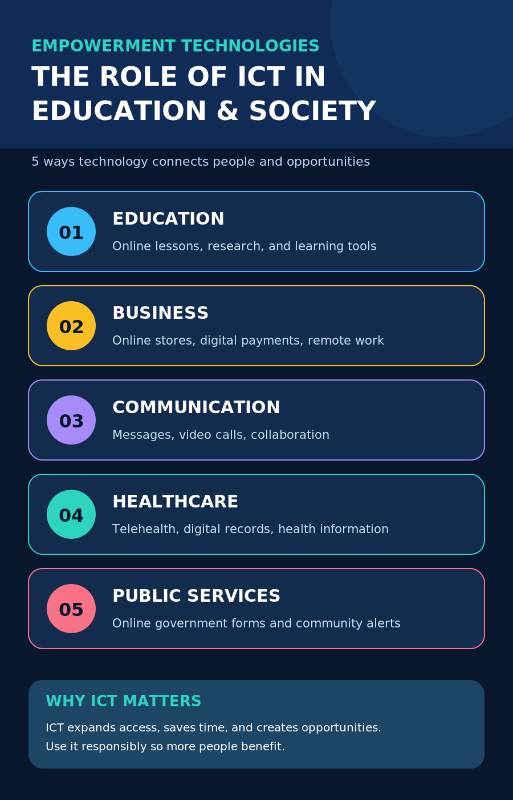

The Impact of ICT on My Daily Life and Society
⚡ Ubiquitous Connectivity
From waking to morning alarms to researching complex lessons, ICT streamlines daily routines and bridges long-distance family ties.
⚖️ Opportunities & Risks
Unlocks abundant learning and digital careers, yet demands vigilance against screen fatigue, privacy loss, and misinformation.
🛡️ Digital Responsibility
Practicing ethical netiquette: verifying sources, protecting credentials, and championing positive, supportive online discourse.
Information and Communication Technology (ICT) is part of almost everything I do. I wake up to a phone alarm, check messages from my family and classmates, and use the internet to research my lessons. Even small tasks, like paying bills, listening to music, or finding a route, now happen through apps and online services. ICT saves me time and gives me access to information that would once have required a trip to a library or an office.
Technology has clear advantages. It makes communication fast and cheap, because I can video call a relative abroad in seconds. It gives me free learning resources, such as online lessons and educational videos. It also creates opportunities for work and business, from online selling to remote jobs. However, technology has disadvantages too. Too much screen time can hurt my sleep, my eyes, and my focus. Social media can spread false information, encourage comparison with others, and expose people to cyberbullying, scams, and privacy risks. Technology is a tool, and its effects depend on how it is used.
In education, ICT has changed how I learn. I can attend online classes, collaborate on shared documents, and make presentations with free tools. Teachers can share modules and quizzes instantly, and students who cannot be in school can still keep up. In communication, ICT lets people share ideas across the world through messaging, email, and social platforms. Communities can organize quickly during emergencies, and ordinary people can have their voices heard.
With these benefits comes responsibility. As a digital citizen, I must think before I post, respect other people's opinions and privacy, and give credit to the creators of the content I use. I must verify information before sharing it, protect my passwords and personal data, and report bullying or harmful content. By using ICT with honesty, respect, and care, I can help make the digital world a safer and more helpful place for everyone.
Digital Citizenship Poster: Be a Responsible Internet User
A visual guide designed to remind students that the internet is a collective community where personal habits protect our privacy, mental wellness, and integrity.
 🔍 Click to zoom full-size
🔍 Click to zoom full-size
✅ Responsible DOs
- Verify facts and source links before sharing online
- Safeguard passwords with two-factor authentication
- Respect peers' viewpoints and personal privacy
- Attribute credit to content creators and artists
- Report cyberbullying, abusive posts, and scams
❌ Critical DON'Ts
- Never share sensitive credentials or home addresses
- Don't click suspicious links or download unverified files
- Avoid cyberbullying, trolling, or aggressive arguments
- Don't spread unverified rumors or misleading headlines
- Never pirate or claim another creator's intellectual work
ICT Infographic: The Role of ICT in Education and Society
Synthesizing how modern telecommunications and digital infrastructure power five critical sectors of 21st-century civilization.

🔍 Click to zoom full-sizeEducation
E-learning platforms, virtual labs, and open educational resources.
Commerce
E-commerce, contactless payments, and international remote freelancing.
Communication
Real-time messaging, video conferencing, and emergency disaster response.
Healthcare
Telemedicine, electronic medical records, and digital health alerts.
Public Service
Transparent e-governance, digital tax filing, and civil registries.
Newton's Laws of Motion in Real Life
An interactive, animated presentation analyzing classical mechanics through relatable, everyday Filipino experiences.
🔬 Interactive Mini-Lab: Newton's 2nd Law ($F = ma$)
Adjust the sliders below to see how varying Force (F) and Mass (m) determines the cart's acceleration ($a = F/m$).
a = F / m📥 Download Original PowerPoint (.pptx) Editable classroom presentation with complete visual diagrams.
How ICT Changes Our Society: Awareness Video
A comprehensive educational video examining the transformative impact, real-world utility, and social ethics of computing technology.